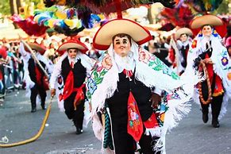
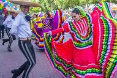

Cultura y Tradiciones
Carnaval de Tlaxcala Se realiza antes de la Cuaresma. Destaca por las danzas de "huehues", personajes con máscaras y trajes coloridos que representan la resistencia indígena durante la época colonial.
Danza de los huehues Tradición ancestral que forma parte del carnaval. Los danzantes representan figuras satíricas de la época colonial, bailando al ritmo de música tradicional con máscaras talladas en madera y trajes bordados.
Día de Muertos Celebrado el 1 y 2 de noviembre. Las familias tlaxcaltecas instalan altares con ofrendas, flores de cempasúchil, pan de muerto, veladoras y fotografías de sus seres queridos. También se visita el panteón.
Fiestas patronales Cada comunidad celebra a su santo patrono con misas, procesiones, danzas, música en vivo, juegos pirotécnicos y venta de antojitos. Es una mezcla de tradiciones indígenas y católicas.
 El uso del nahuatl En varias comunidades del estado, sobre todo en zonas rurales, aún se habla el náhuatl, lo cual preserva parte del legado prehispánico y cultural de Tlaxcala.
Artesanías tradicionales En Tlaxcala se elaboran textiles bordados, cerámica, papel amate y tallados en madera. Estas artesanías forman parte del patrimonio cultural del estado y son vendidas en ferias y mercados locales.
Rituales prehispánicos En algunas zonas arqueológicas como Xochitécatl y Cacaxtla, aún se realizan ceremonias relacionadas con los ciclos agrícolas y la cosmovisión indígena, especialmente durante los equinoccios y solsticios.